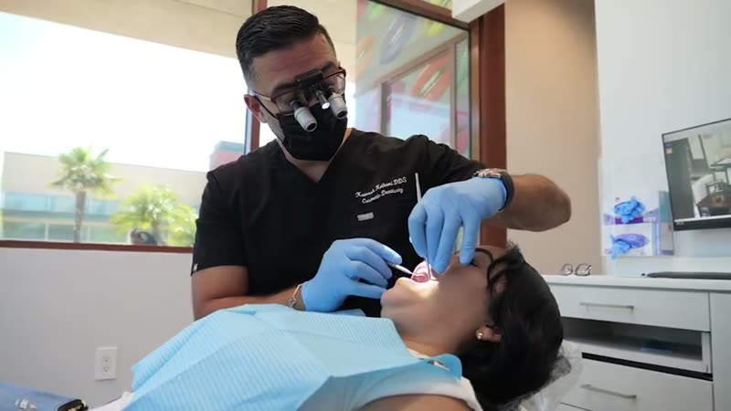

Dental Implants
Titanium implants that replace missing teeth with stable, natural-looking restorations.
Dental implants in OxnardRoutine care in Oxnard
General dentistry is the routine, ongoing care of your teeth and gums, including exams, cleanings and patient education. Our Oxnard office provides general dentistry. Contact the dental office for more detail. Your dentist can explain what they find in plain language.

General dentistry
General dentistry is the routine care that looks after the teeth and gums of Oxnard patients over time. It starts with regular exams and cleanings, and it includes time to ask questions about your oral health.
A dental exam is part of a checkup of your teeth and gums. Dentists can also treat a wide range of oral health issues (opens in a new tab), including cavities, gingivitis and gum disease.
At Omni Dental Specialty in Oxnard, your dentist reviews your dental history and explains the findings. If something needs further attention, your dentist discusses the options with you, and we answer your questions along the way. We welcome patients from Oxnard, El Rio and College Park. Read about our Oxnard dental office or, if you have questions, contact us.
A routine visit
The order can vary, and your dentist adjusts each visit to your needs. Ask your dentist to explain each stage, so you know what to expect from a routine visit in Oxnard.
Your dentist asks about your recent medical history. Tell us about anything that has changed since your last visit, including new medicines.
X-rays help your dentist see hidden problems (opens in a new tab). Your dentist decides whether you need them, and you can ask what they are for.
A cleaning removes plaque and tartar from your teeth. Your dentist explains each step as you go.
A cleaning can also include polishing your teeth with a soft rubber cup and special toothpaste.
Your dentist looks at your teeth and gums for signs of decay or gum concerns and explains anything we find in plain language. An exam can also include a check of your mouth, tongue and neck.
Every visit includes time for your questions, including brushing, flossing and daily habits. If further care is needed, we explain the options before anything is scheduled.
General dentistry is not one fixed plan. Your dentist talks with you about which kind of visit fits your needs.
Gather these details ahead of time and add questions of your own. Taking notes can help you remember your dentist's advice. If you have a question before you come to the Oxnard office, you can contact us.

Routine care
These are some common situations, and your dentist can talk through what applies to you.
If you are looking for a dental office in Oxnard, a first visit lets us review your dental history and answer your questions. It is also a good time to talk about your oral health goals.
Regular visits let your dentist see how your teeth and gums change over time. Checkups are important (opens in a new tab) even if you do not have any symptoms.
If you are unsure whether something needs attention, contact the dental office to ask about it.
Tell your dentist about any health conditions you have. You may need more frequent dental exams if you have a health condition such as diabetes or heart disease.
Pregnancy can make some dental problems worse, so regular checkups still matter. Tell your dentist if you are pregnant or think you may be pregnant.
If it has been a while since your last visit, you are welcome to call and ask what a first step could look like. Use the contact form or call the dental office at (805) 366-6000 to ask about new patient forms and what to bring.
Plan ahead
Planning ahead is simpler with a few general points in hand. Your dentist can explain which ones apply to you. You can also see all of our dental services in Oxnard.

Dental exams are part of routine oral health checkups. A visit can also include a cleaning and time for your questions. Your dentist adjusts the visit to your needs.
Dental care is not the same for everyone, and some people need more visits than others. Ask your dentist how often you should have exams.
Bleeding or swollen gums, loose teeth and toothaches are reasons to call your dentist sooner. For an urgent concern, call the dental office at (805) 366-6000. If you believe you are experiencing a medical emergency, call 911 or go to the nearest emergency room.
Keep your dentist informed of changes in your overall health, because many medical conditions can affect your dental health too. Let us know if the medicines you take have changed. This helps your dentist plan each visit.
Brush with a fluoride toothpaste and clean between your teeth regularly. Ask your dentist which daily routine suits you.
Early tooth decay (opens in a new tab) does not usually cause symptoms, and decay can be found during a regular dental checkup.
Why patients choose us
One office on E. Gonzales Road for routine care, smile makeovers and tooth replacement, led by Dr. Kourosh Keihani, DDS.
Patients rate the practice Excellent, based on 614 Google reviews.
Book Online (opens in a new tab)The Oxnard office uses a CT scan, an intraoral camera, digital X-rays and an aerosol machine.
The CT scan is used for CT-guided implant placement.
Omni Dental Specialty accepts Denti-Cal, most PPO plans and HMOs.
Call before your visit to ask about your plan, or about financing.
The office is open for emergency dental appointments, for tooth pain and other urgent problems.
Call (805) 366-6000 to arrange a visit.
General, restorative and cosmetic dentistry for patients from youngsters to seniors.
From exams and crowns to implants, veneers and Invisalign, under one roof at 1690 E. Gonzales Road.
Patient reviews
Dr. Keihani is an excellent dentist, experienced and talented to give solutions to my varied dental needs. I’m very thankful His staff is also very friendly and helpful. A well-run clinic.
“Waiting time was 5mins, office staff friendly, doctor let you know what’s going on, and Alijah is happy! That’s what counts to me!!!”
“I had very a good experience at Omni Dental. The staff is very friendly and caring. I highly recommend this office for dental treatment.”
“Such a great attitude, attention, atmosphere, you can’t ask for more!”
“Crystal is very professional and curtious I highly recommend her as a hygenist office staff nice.”
“The doctor was excellent the owner of the company very knowledgeable very experienced very hospitable he really knows his dental work very affordable I would recommend him to every person go see this doctor doctor that Omni dental Office”
Questions
Routine visits raise common questions, and these are general answers. For information specific to your situation, contact the dental office.
Request a visit at our Oxnard office.
Address: 1690 E. Gonzales Road, Oxnard, CA 93036
Phone: (805) 366-6000
Hours: Mon to Thu 9 am to 5 pm, Fri 9 am to 4 pm, Sat and Sun closed
A routine visit can include a review of your dental history, an exam of your teeth and gums, a cleaning and time for your questions, though the order can vary. If your dentist recommends other care, we explain the options before anything is scheduled.
Your dentist recommends how often to visit based on your oral health and history. You might need dental cleanings more often if you have gum disease, so ask your dentist how often is right for you. We can talk through the schedule at your appointment.
Contact the dental office at (805) 366-6000 to ask about care for you and your family.
Coverage varies by plan. Contact your insurance provider to understand your benefits. For details about insurance plans, payment options and fees, contact the dental office at (805) 366-6000.
For an urgent concern, call the dental office at (805) 366-6000. If you believe you are experiencing a medical emergency, call 911 or go to the nearest emergency room.
Whether you need X-rays depends on your own mouth and history. Your dentist examines your mouth first and then decides whether you need them. Ask why they are suggested so you understand the reason.
Plaque is a sticky film (opens in a new tab) that can contribute to tooth decay and gum disease, and it can eventually harden into tartar. A cleaning removes bacteria, plaque and tartar buildup. Your dentist can also talk with you about daily care at home.
Let your dentist know, and talk about ways to help you feel comfortable during your visits. Tell us when you call or when you arrive, and we will talk through what to expect.
What we offer
Routine care, smile makeovers and tooth replacement under one roof at 1690 E. Gonzales Road.
Titanium implants that replace missing teeth with stable, natural-looking restorations.
Dental implants in Oxnard
Porcelain veneers, dental bonding, teeth whitening and smile makeovers.
Oxnard cosmetic dentistry
Clear aligners that straighten teeth gradually, without metal brackets.
Invisalign in Oxnard, CA
Prompt, compassionate emergency dental care to address your pain.
Emergency dentist in Oxnard
Treatment that saves a damaged tooth by cleaning out the pulp.
Oxnard root canal treatment
A tooth-shaped cap that restores the shape, size, strength and appearance of a damaged tooth.
Dental crowns in Oxnard, CA
Scaling and root planing, gum grafting and other treatment for gum disease.
Gum disease treatment in Oxnard
Care for wisdom teeth that lack space or come in incorrectly.
Wisdom teeth extractions in Oxnard
Whitening treatments, including custom at-home whitening kits.
Teeth whitening in Oxnard
Custom night guards and splints to protect your teeth and jaw.
Oxnard TMJ therapyOmni Dental Specialty is located at 1690 E. Gonzales Road, Oxnard. Call or send a request. The dental office responds to requests during office hours.
Individual results vary. This page is for informational purposes and does not constitute dental advice.
Where
1690 E. Gonzales Road, Oxnard, CA 93036
Mon to Thu 9 am to 5 pm
Fri 9 am to 4 pm
Sat and Sun closed